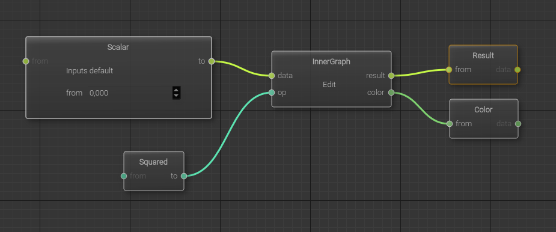
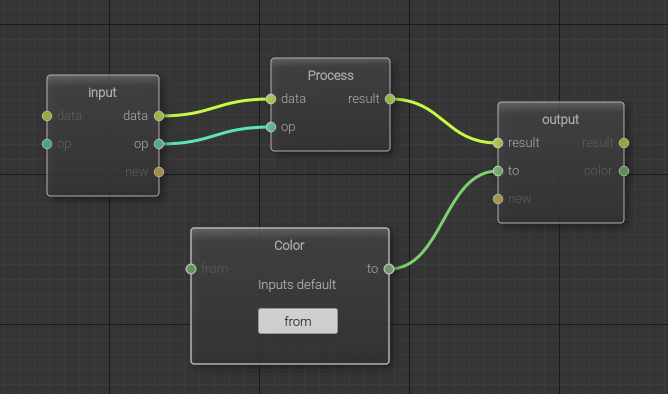

|
Radium Engine
1.5.24
|
|
Radium Engine
1.5.24
|
Radium-Engine embed a node system allowing to develop computation graph using an adaptation of dataflow programming. This documentation explain the concepts used in the node system and how to develop computation graph using the Core node system and how to extend the Core node system to be used in specific Radium-Engine application or library.
When building the Radium-Engine libraries, the node system is available from the Radium::Dataflow component. The availability of this component in the set of built/installed libraries is managed using the RADIUM_GENERATE_LIB_DATAFLOW cmake option (set to ON by default) of the main Radium-Engine CMakeLists.txt.
The Radium::Dataflow component is a header-only library with is linked against three sub-components :
When defining the CMakeLists.txt configuration file for an application/library that will build upon the node system, The RadiumDataflow component might be requested in several way :
find_package(Radium REQUIRED COMPONENTS Dataflow). This will define the imported target Radium::Dataflow that gives access to all the available sub-components at once but also through imported targets Radium::DataflowCore, Radium::DataflowQtGui and Radium::DataflowRendering.find_package(Radium REQUIRED COMPONENTS DataflowCore). This will define the imported target Radium::DataflowCore only.find_package(Radium REQUIRED COMPONENTS DataflowQtGui). This will define the imported target Radium::DataflowQtGui only, with transitive dependencies on Radium::DataflowCore.find_package(Radium REQUIRED COMPONENTS DataflowRendering). This will define the imported target Radium::DataflowRendering only, with transitive dependencies on Radium::DataflowCore.The targets that depends on a Dataflow components should then be configured as any target and linked against the requested dataflow component, by, e.g, adding the line target_link_libraries(target_name PUBLIC Radium::Dataflow) (or the only needed subcomponent).
The node system allow to build computation graph that takes its input from some data source and store their results in some data sink after applying several functions on the data.
Computation graphs can be serialized and un-serialized in json format. The serialization process is nevertheless limited to serializable data stored on the node and it is of the responsibility of the application to manage non serializable data such as, e.g. anonymous functions (lambdas, functors, ...) dynamically defined by the application.
The Radium node system relies on the following concepts
Node (see Ra::Dataflow::Core::Node for reference manual) : a node represent a function that will be executed on several strongly typed input data, defining the definition domain of the function, to produce some strongly typed output data, defining the definition co-domain of the function.
The input and output data are accessed through ports allowing to connect nodes together to form a graph.
The node profile is implicitly defined by its domain and co-domain.
A node can be specialized to be a data source node (empty domain) or a data sink node (empty co-domain). These specific nodes define the input and output of a complex computation graph
Port (see Ra::Dataflow::Core::PortBase for reference manual) : a port represent an element of the node profile and allow to build the computation graph by linking ports together, implicitly defining links.
A port gives access to a strongly typed data and, while implementing the general Ra::Dataflow::Core::PortBase interface should be specialized to be either an input port (element of the definition domain of a node) through the instancing of the template Ra::Dataflow::Core::PortIn or to an output port (element of the definition co-domain of a node) through the instancing of the template Ra::Dataflow::Core::PortOut.
When a node executes its function, it takes its parameter from its input ports and set the result on the output port.
An output port can be connected to an input port of the same DataType to build the computation graph.
Graph (see Ra::Dataflow::Core::DataflowGraph for reference manual) : a graph is a set of node connected through their ports so that they define a direct acyclic graph (DAG) representing a complex function. The DAG represents connections from some data source nodes to some data sink nodes through
Once built by adding nodes and links, a graph should be compiled so that the system verify its validity (DAG, types, connections, ...).
Once compiled, a graph can be executed. The input data of the computation graph should be set on the available data sources of the graph and the results fetched from the data sinks.
As a graph can be used as a node (a sub graph) in any other graph. When doing this, all data sources and data sinks nodes are associated with interface ports and these interface ports are added as input or output ports on the graph so that links can be defined using these ports.
input and output ports of a graph can also be accessed directly from the application using data setters and data getters fetched from the graph. These data setters and data getters allows to use any graph without the need to know explicitly their data sources and data sinks nor defining ports to be linked with the input and output ports of the graph.
Factories (see Ra::Dataflow::Core::NodeFactoriesManager for reference manual) : the serialization of a graph output a set of json object describing the graph. If serialization is always possible, care must be taken for the system to manage un-serilization of any nodes.
When serializing a graph, the json representing a node contains the type (the name of the concrete C++ class) of the node and several other properties of the node system. When un-serializing a graph, nodes will be automatically instanced from their type. The instantiation of a node is made using services offered by node factories and associated to the node type. So, in order to be un-serializable, each node must register its type to a factory and each graph must refer to the factories used to instantiate its node.
The example application examples/HelloGraph shows how to define a computation graph to apply filtering on a collection. In this example, whose code is detailed below, the following graph is built and executed using different input data.
This graphs has two inputs, corresponding to the two Source< ... > nodes. These input will deliver to the computation graph :
These two sources are linked to the input of a Ra::Dataflow::Core::Functionals::FilterNode, here represented by the Filter< ... > node. This node select from its in input only the values validated by the predicate f and built its output out with these values.
The result of this filtering is linked to the graph output, corresponding to the Ra::Dataflow::Core::Sinks::SinkNode Sink< ... >.
Once the graph is built and compile, the HelloGraph application sent different input to the graph and print the result of the computation.
To develop such an application, the following should be done
First, an object of type Ra::Dataflow::Core::DataflowGraph is instanced :
Then, the nodes are instanced and added to the graph
Links between ports are added to the graph, and if an error is detected, due to e.g. port type incompatiblitiy, it is reported
In order to use the graph as a function acting on its input, it should be first compiled by
If the compilation success the graph inputs can be set either using node return by Ra::Dataflow::Core::DataflowGraph::add_node, or getting the node from the graph with Ra::Dataflow::Core::DataflowGraph::node
Here, the accessor input allows to set the pointer on the RaVector to be processed while the accessor selector allows to set the predicate to evaluate when filtering the collection. This predicates select values les than 0.5
The accessor output will allow, once the graph is executed, to get a reference to or to copy the resulting values.
Once the input data are available (in this example, the test vector is filled with 10 random values between 0 and 1), the graph can be executed and a reference to the resulting vector can be fetched using
Data setters copy values to the nodes, but getters return a reference, hence results are uptodate when running the graph process again.
The unittests developed alongside the Radium::Dataflow component, and located in the directory tests/unittest/Dataflow/ of the Radium-Engine source tree, can be used to learn the following :
A graph can use another graph as node. The inner graph must have input/output nodes to expose input/output ports. Related methods :

